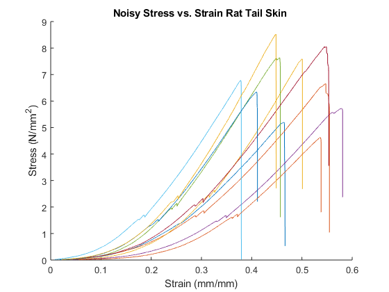

Contents
clear all
close all
Load Data
source_dirTens = 'C:\Users\Mackenzie\Documents\MATLAB\BME302_Lab\LAB3\Tension';
TensFile = dir(fullfile(source_dirTens,'*.xlsx'));
for j = 1:5
[num,txt,raw] = xlsread(TensFile(j).name);
name = extractBefore(TensFile(j).name, '.xlsx');
name = strrep(name,'1','');
numtrials = numel(num(1,:))/2;
SET = struct('Material', {},...
'GageLength', {},...
'Thickness', {},...
'Width', {},...
'Area', {},...
'Position', {},...
'Load', {},...
'Stress', {},...
'Strain', {});
for k = 1:numtrials
i = 2*k-1;
s.Material = name;
s.GageLength = num(1,i+1);
s.Thickness = num(2,i+1);
s.Width = num(3,i+1);
s.Area = num(4,i+1);
s.Position = num(8:end,i);
s.Load = num(8:end,i+1);
s.Position(isnan(s.Position)) = [];
s.Load(isnan(s.Load)) = [];
s.Stress = (s.Load)./(s.Area);
s.Strain = (s.Position)./(s.GageLength);
SET(k) = s;
end
Tensile.(sprintf('file%d', j))=SET;
end
Mean + SD of measurement values
clear h m
MeanSD_tens = struct('GageLengthMean', {},...
'ThicknessMean', {},...
'WidthMean', {},...
'AreaMean', {},...
'GageLengthSD', {},...
'ThicknessSD', {},...
'WidthSD', {},...
'AreaSD',{});
for h = 1:5
m.GageLengthMean = mean([Tensile.(sprintf('file%d', h)).GageLength]);
m.ThicknessMean = mean([Tensile.(sprintf('file%d', h)).Thickness]);
m.WidthMean = mean([Tensile.(sprintf('file%d', h)).Width]);
m.AreaMean = mean([Tensile.(sprintf('file%d', h)).Area]);
m.GageLengthSD = std([Tensile.(sprintf('file%d', h)).GageLength]);
m.ThicknessSD = std([Tensile.(sprintf('file%d', h)).Thickness]);
m.WidthSD = std([Tensile.(sprintf('file%d', h)).Width]);
m.AreaSD = std([Tensile.(sprintf('file%d', h)).Area]);
MeanSD_tens(h) = m;
end
Stress Strain Plots
file 1 - remove fracture region, find 1st & 2nd derivative
clf(figure(1))
figure(1)
for d = 1:numel(Tensile.file1)
StressNew = downsample(Tensile.file1(d).Stress, 3);
StrainNew = downsample(Tensile.file1(d).Strain, 3);
[Tensile.file1(d).StressNew] = StressNew;
[Tensile.file1(d).StrainNew] = StrainNew;
for f = numel(Tensile.file1):1
X = find(Tensile.file1(f).diff <= -50);
Tensile.file1(f).StressNew(X) = [];
Tensile.file1(f).StrainNew(X) = [];
end
Tensile.file1(d).StressNew = smooth((Tensile.file1(d).StrainNew), (Tensile.file1(d).StressNew),0.1, 'loess');
[Tensile.file1(d).diff] = diff(Tensile.file1(d).StressNew)./...
diff(Tensile.file1(d).StrainNew);
[Tensile.file1(d).diff2] = diff(Tensile.file1(d).diff)./...
diff(Tensile.file1(d).StrainNew(2:end));
hold on
plot(Tensile.file1(d).Strain, Tensile.file1(d).Stress);
xlabel('Strain (mm/mm)');
ylabel('Stress (N/{mm}^2)');
title(['Noisy Stress vs. Strain ', Tensile.file1(d).Material])
hold off
hold on
xlabel('Strain (mm/mm)');
ylabel('Stress (N/{mm}^2)');
hold off
end
clear d c f
P = zeros(1,18);
E = zeros(1,9);
YieldStress = zeros(1,9);
for d = 1:numel(Tensile.file1)
keepgoing = true;
f = 1;
Window = 1;
while (f+Window < numel(Tensile.file1(d).StrainNew)) && keepgoing
R = corr(Tensile.file1(d).StrainNew(f:f+Window),...
Tensile.file1(d).StressNew(f:f+Window));
if R > 0.97
keepgoing = true;
f = f+Window;
else
keepgoing = false;
X = Tensile.file1(d).StrainNew(1:f+Window);
Y = Tensile.file1(d).StressNew(1:f+Window);
YieldStress(d) = Tensile.file1(d).StressNew(f+Window);
for c = 2*d-1
P(c:c+1) = polyfit(X, Y, 1);
E(d) = abs(P(c));
end
end
end
[Tensile.file1(d).E] = E(d);
[Tensile.file1(d).YS] = YieldStress(d);
[Tensile.file1(d).UStress] = max(Tensile.file1(d).StressNew);
R = find(Tensile.file1(d).StressNew == max(Tensile.file1(d).StressNew));
[Tensile.file1(d).UStrain] = Tensile.file1(d).StrainNew(R);
end
H = find(E == 0);
for d = H
YieldStress(d) = Tensile.file1(d).StressNew(end);
for c = 2*d-1
P(c:c+1) = polyfit(Tensile.file1(d).StrainNew, Tensile.file1(d)...
.StressNew, 1);
E(d) = P(c);
end
[Tensile.file1(d).E] = E(d);
[Tensile.file1(d).YS] = YieldStress(d);
[Tensile.file1(d).UStress] = max(Tensile.file1(d).StressNew);
R = find(Tensile.file1(d).StressNew == max(Tensile.file1(d).StressNew));
[Tensile.file1(d).UStrain] = Tensile.file1(d).StrainNew(R);
end
props_MeanSD_tens1 = struct('EMean', {},...
'YSMean', {},...
'UStrainMean', {},...
'UStressMean', {},...
'ESD', {},...
'YSSD', {},...
'UStrainSD', {},...
'UStressSD', {});
n.EMean = mean([Tensile.file1.E]);
n.YSMean = mean([Tensile.file1.YS]);
n.UStrainMean = mean([Tensile.file1.UStrain]);
n.UStressMean = mean([Tensile.file1.UStress]);
n.ESD = std([Tensile.file1.E]);
n.YSSD = std([Tensile.file1.YS]);
n.UStrainSD = std([Tensile.file1.UStrain]);
n.UStressSD = std([Tensile.file1.UStress]);
props_MeanSD_tens1 = n;
file 2 - 1st & 2nd derivative
clf(figure(2))
figure(2)
for d = 1:numel(Tensile.file2)
StressNew = downsample(Tensile.file2(d).Stress, 5);
StrainNew = downsample(Tensile.file2(d).Strain, 5);
[Tensile.file2(d).StressNew] = StressNew;
[Tensile.file2(d).StrainNew] = StrainNew;
[Pks, Locs] = findpeaks(Tensile.file2(d).StressNew);
if length(Tensile.file2(d).StrainNew) >= Locs(end)
Tensile.file2(d).StrainNew(Locs(end):end) = [];
Tensile.file2(d).StressNew(Locs(end):end) = [];
end
Tensile.file2(d).StressNew = smooth((Tensile.file2(d).StrainNew),...
(Tensile.file2(d).StressNew),0.1, 'loess');
[Tensile.file2(d).diff] = diff(Tensile.file2(d).StressNew)./...
diff(Tensile.file2(d).StrainNew);
[Tensile.file2(d).diff2] = diff(Tensile.file2(d).diff)./...
diff(Tensile.file2(d).StrainNew(2:end));
hold on
plot(Tensile.file2(d).Strain, Tensile.file2(d).Stress);
xlabel('Strain (mm/mm)');
ylabel('Stress (N/{mm}^2)');
title(['Noisy Stress vs. Strain ', Tensile.file2(d).Material])
hold off
hold on
xlabel('Strain (mm/mm)');
ylabel('Stress (N/{mm}^2)');
end
clear d c f
P = zeros(1,16);
E = zeros(1,8);
YieldStress = zeros(1,8);
for d = 1:numel(Tensile.file2)
keepgoing = true;
f = 1;
Window = 1;
while (f+Window < numel(Tensile.file2(d).StrainNew)) && keepgoing
R = corr(Tensile.file2(d).StrainNew(f:f+Window),...
Tensile.file2(d).StressNew(f:f+Window));
if R > 0.97
keepgoing = true;
f = f+Window;
else
keepgoing = false;
X = Tensile.file2(d).StrainNew(1:f+Window);
Y = Tensile.file2(d).StressNew(1:f+Window);
YieldStress(d) = Tensile.file2(d).StressNew(f+Window);
for c = 2*d-1
P(c:c+1) = polyfit(X, Y, 1);
E(d) = abs(P(c));
end
end
end
[Tensile.file2(d).E] = E(d);
[Tensile.file2(d).YS] = YieldStress(d);
[Tensile.file2(d).UStress] = max(Tensile.file2(d).StressNew);
R = find(Tensile.file2(d).StressNew == max(Tensile.file2(d).StressNew));
[Tensile.file2(d).UStrain] = Tensile.file2(d).StrainNew(R);
end
H = find(E == 0);
for d = H
YieldStress(d) = Tensile.file2(d).StressNew(end);
for c = 2*d-1
P(c:c+1) = polyfit(Tensile.file2(d).StrainNew, Tensile.file2(d)...
.StressNew, 1);
E(d) = P(c);
end
[Tensile.file2(d).E] = E(d);
[Tensile.file2(d).YS] = YieldStress(d);
[Tensile.file2(d).UStress] = max(Tensile.file2(d).StressNew);
R = find(Tensile.file2(d).StressNew == max(Tensile.file2(d).StressNew));
[Tensile.file2(d).UStrain] = Tensile.file2(d).StrainNew(R);
end
props_MeanSD_tens2 = struct('EMean', {},...
'YSMean', {},...
'UStrainMean', {},...
'UStressMean', {},...
'ESD', {},...
'YSSD', {},...
'UStrainSD', {},...
'UStressSD', {});
n.EMean = mean([Tensile.file2.E]);
n.YSMean = mean([Tensile.file2.YS]);
n.UStrainMean = mean([Tensile.file2.UStrain]);
n.UStressMean = mean([Tensile.file2.UStress]);
n.ESD = std([Tensile.file2.E]);
n.YSSD = std([Tensile.file2.YS]);
n.UStrainSD = std([Tensile.file2.UStrain]);
n.UStressSD = std([Tensile.file2.UStress]);
props_MeanSD_tens2 = n;
file 3 - remove fracture region, find 1st & 2nd derivative
clf(figure(3))
figure(3)
for d = 1:numel(Tensile.file3)
StressNew = downsample(Tensile.file3(d).Stress, 5);
StrainNew = downsample(Tensile.file3(d).Strain, 5);
[Tensile.file3(d).StressNew] = StressNew;
[Tensile.file3(d).StrainNew] = StrainNew;
[Pks, Locs] = findpeaks(Tensile.file3(d).StressNew);
if length(Tensile.file3(d).StrainNew) >= Locs(end)
Tensile.file3(d).StrainNew(Locs(end):end) = [];
Tensile.file3(d).StressNew(Locs(end):end) = [];
end
Tensile.file3(d).StressNew = smooth((Tensile.file3(d).StrainNew),...
(Tensile.file3(d).StressNew),0.1, 'loess');
[Tensile.file3(d).diff] = diff(Tensile.file3(d).StressNew)./...
diff(Tensile.file3(d).StrainNew);
[Tensile.file3(d).diff2] = diff(Tensile.file3(d).diff)./...
diff(Tensile.file3(d).StrainNew(2:end));
hold on
plot(Tensile.file3(d).Strain, Tensile.file3(d).Stress);
xlabel('Strain (mm/mm)');
ylabel('Stress (N/{mm}^2)');
title(['Stress vs. Strain ', Tensile.file3(d).Material])
hold off
hold on
xlabel('Strain (mm/mm)');
ylabel('Stress (N/{mm}^2)');
hold off
end
clear d c f
P = zeros(1,20);
E = zeros(1,10);
YieldStress = zeros(1,10);
for d = 1:numel(Tensile.file3)
keepgoing = true;
f = 1;
Window = 1;
while (f+Window < numel(Tensile.file3(d).StrainNew)) && keepgoing
R = corr(Tensile.file3(d).StrainNew(f:f+Window),...
Tensile.file3(d).StressNew(f:f+Window));
if R > 0.97
keepgoing = true;
f = f+Window;
else
keepgoing = false;
X = Tensile.file3(d).StrainNew(1:f+Window);
Y = Tensile.file3(d).StressNew(1:f+Window);
YieldStress(d) = Tensile.file3(d).StressNew(f+Window);
for c = 2*d-1
P(c:c+1) = polyfit(X, Y, 1);
E(d) = abs(P(c));
end
end
end
[Tensile.file3(d).E] = E(d);
[Tensile.file3(d).YS] = YieldStress(d);
[Tensile.file3(d).UStress] = max(Tensile.file3(d).StressNew);
R = find(Tensile.file3(d).StressNew == max(Tensile.file3(d).StressNew));
[Tensile.file3(d).UStrain] = Tensile.file3(d).StrainNew(R);
end
H = find(E == 0);
for d = H
YieldStress(d) = Tensile.file3(d).StressNew(end);
for c = 2*d-1
P(c:c+1) = polyfit(Tensile.file3(d).StrainNew,...
Tensile.file3(d).StressNew, 1);
E(d) = P(c);
end
[Tensile.file3(d).E] = E(d);
[Tensile.file3(d).YS] = YieldStress(d);
[Tensile.file3(d).UStress] = max(Tensile.file3(d).StressNew);
R = find(Tensile.file3(d).StressNew == max(Tensile.file3(d).StressNew));
[Tensile.file3(d).UStrain] = Tensile.file3(d).StrainNew(R);
end
props_MeanSD_tens3 = struct('EMean', {},...
'YSMean', {},...
'UStrainMean', {},...
'UStressMean', {},...
'ESD', {},...
'YSSD', {},...
'UStrainSD', {},...
'UStressSD', {});
n.EMean = mean([Tensile.file3.E]);
n.YSMean = mean([Tensile.file3.YS]);
n.UStrainMean = mean([Tensile.file3.UStrain]);
n.UStressMean = mean([Tensile.file3.UStress]);
n.ESD = std([Tensile.file3.E]);
n.YSSD = std([Tensile.file3.YS]);
n.UStrainSD = std([Tensile.file3.UStrain]);
n.UStressSD = std([Tensile.file3.UStress]);
props_MeanSD_tens3 = n;
file 4 - remove fracture region, find 1st & 2nd derivative
clf(figure(4))
figure(4)
for d = 1:numel(Tensile.file4)
StressNew = downsample(Tensile.file4(d).Stress, 5);
StrainNew = downsample(Tensile.file4(d).Strain, 5);
[Tensile.file4(d).StressNew] = StressNew;
[Tensile.file4(d).StrainNew] = StrainNew;
[Pks, Locs] = findpeaks(Tensile.file4(d).StressNew);
if length(Tensile.file4(d).StrainNew) >= Locs(end)
Tensile.file4(d).StrainNew(Locs(end):end) = [];
Tensile.file4(d).StressNew(Locs(end):end) = [];
end
Tensile.file4(d).StressNew = smooth((Tensile.file4(d).StrainNew),...
(Tensile.file4(d).StressNew),0.1, 'loess');
[Tensile.file4(d).diff] = diff(Tensile.file4(d).StressNew)./...
diff(Tensile.file4(d).StrainNew);
[Tensile.file4(d).diff2] = diff(Tensile.file4(d).diff)./...
diff(Tensile.file4(d).StrainNew(2:end));
hold on
plot(Tensile.file4(d).Strain, Tensile.file4(d).Stress);
xlabel('Strain (mm/mm)');
ylabel('Stress (N/{mm}^2)');
title(['Noisy Stress vs. Strain ', Tensile.file4(d).Material])
hold off
hold on
xlabel('Strain (mm/mm)');
ylabel('Stress (N/{mm}^2)');
hold off
end
clear d c f
P = zeros(1,20);
E = zeros(1,10);
YieldStress = zeros(1,10);
for d = 1:numel(Tensile.file4)
keepgoing = true;
f = 1;
Window = 1;
while (f+Window < numel(Tensile.file4(d).StrainNew)) && keepgoing
R = corr(Tensile.file4(d).StrainNew(f:f+Window),...
Tensile.file4(d).StressNew(f:f+Window));
if R > 0.97
keepgoing = true;
f = f+Window;
else
keepgoing = false;
X = Tensile.file4(d).StrainNew(1:f+Window);
Y = Tensile.file4(d).StressNew(1:f+Window);
YieldStress(d) = Tensile.file4(d).StressNew(f+Window);
for c = 2*d-1
P(c:c+1) = polyfit(X, Y, 1);
E(d) = abs(P(c));
end
end
end
[Tensile.file4(d).E] = E(d);
[Tensile.file4(d).YS] = YieldStress(d);
[Tensile.file4(d).UStress] = max(Tensile.file4(d).StressNew);
R = find(Tensile.file4(d).StressNew == max(Tensile.file4(d).StressNew));
[Tensile.file4(d).UStrain] = Tensile.file4(d).StrainNew(R);
end
H = find(E == 0);
for d = H
YieldStress(d) = Tensile.file4(d).StressNew(end);
for c = 2*d-1
P(c:c+1) = polyfit(Tensile.file4(d).StrainNew,...
Tensile.file4(d).StressNew, 1);
E(d) = P(c);
end
[Tensile.file4(d).E] = E(d);
[Tensile.file4(d).YS] = YieldStress(d);
[Tensile.file4(d).UStress] = max(Tensile.file4(d).StressNew);
R = find(Tensile.file4(d).StressNew == max(Tensile.file4(d).StressNew));
[Tensile.file4(d).UStrain] = Tensile.file4(d).StrainNew(R);
end
props_MeanSD_tens4 = struct('EMean', {},...
'YSMean', {},...
'UStrainMean', {},...
'UStressMean', {},...
'ESD', {},...
'YSSD', {},...
'UStrainSD', {},...
'UStressSD', {});
n.EMean = mean([Tensile.file4.E]);
n.YSMean = mean([Tensile.file4.YS]);
n.UStrainMean = mean([Tensile.file4.UStrain]);
n.UStressMean = mean([Tensile.file4.UStress]);
n.ESD = std([Tensile.file4.E]);
n.YSSD = std([Tensile.file4.YS]);
n.UStrainSD = std([Tensile.file4.UStrain]);
n.UStressSD = std([Tensile.file4.UStress]);
props_MeanSD_tens4 = n;

file 5 - 1st & 2nd derivative
clf(figure(5))
figure(5)
for d = 1:numel(Tensile.file5)
StressNew = downsample(Tensile.file5(d).Stress, 4);
StrainNew = downsample(Tensile.file5(d).Strain, 4);
[Tensile.file5(d).StressNew] = StressNew;
[Tensile.file5(d).StrainNew] = StrainNew;
[Pks, Locs] = findpeaks(Tensile.file5(d).StressNew);
if length(Tensile.file5(d).StrainNew) >= Locs(end)
Tensile.file5(d).StrainNew(Locs(end):end) = [];
Tensile.file5(d).StressNew(Locs(end):end) = [];
end
Tensile.file5(d).StressNew = smooth((Tensile.file5(d).StrainNew),...
(Tensile.file5(d).StressNew),0.1, 'loess');
[Tensile.file5(d).diff] = diff(Tensile.file5(d).StressNew)./...
diff(Tensile.file5(d).StrainNew);
[Tensile.file5(d).diff2] = diff(Tensile.file5(d).diff)./...
diff(Tensile.file5(d).StrainNew(2:end));
Tensile.file5(d).diff = smooth((Tensile.file5(d)...
.StrainNew(2:end)), (Tensile.file5(d).diff),0.1, 'loess');
hold on
plot(Tensile.file5(d).Strain, Tensile.file5(d).Stress);
xlabel('Strain (mm/mm)');
ylabel('Stress (N/{mm}^2)');
title(['Noisy Stress vs. Strain ', Tensile.file5(d).Material])
hold off
hold on
xlabel('Strain (mm/mm)');
ylabel('Stress (N/{mm}^2)');
hold off
end
clear d c f
P = zeros(1,16);
E = zeros(1,8);
YieldStress = zeros(1,8);
for d = 1:numel(Tensile.file5)
keepgoing = true;
f = 1;
Window = 15;
if numel(Tensile.file5(d).StressNew) < 1579 &&...
numel(Tensile.file5(d).StressNew) > 1570
Window = 1000;
end
if numel(Tensile.file5(d).StressNew) < 2000 &&...
numel(Tensile.file5(d).StressNew) > 1800
Window = 1000;
end
while (f+Window < numel(Tensile.file5(d).StrainNew)) && keepgoing
R = corr(Tensile.file5(d).StrainNew(f:f+Window)...
, Tensile.file5(d).StressNew(f:f+Window));
if R > 0.94
keepgoing = true;
f = f+Window;
else
keepgoing = false;
X = Tensile.file5(d).StrainNew(1:f+Window);
Y = Tensile.file5(d).StressNew(1:f+Window);
YieldStress(d) = Tensile.file5(d).StressNew(f+Window);
for c = 2*d-1
P(c:c+1) = polyfit(X, Y, 1);
E(d) = abs(P(c));
end
end
end
[Tensile.file5(d).E] = E(d);
[Tensile.file5(d).YS] = YieldStress(d);
[Tensile.file5(d).UStress] = max(Tensile.file5(d).StressNew);
R = find(Tensile.file5(d).StressNew == max(Tensile.file5(d).StressNew));
[Tensile.file5(d).UStrain] = Tensile.file5(d).StrainNew(R);
end
H = find(E == 0);
for d = H
YieldStress(d) = Tensile.file5(d).StressNew(end);
for c = 2*d-1
P(c:c+1) = polyfit(Tensile.file5(d).StrainNew,...
Tensile.file5(d).StressNew, 1);
E(d) = P(c);
end
[Tensile.file5(d).E] = E(d);
[Tensile.file5(d).YS] = YieldStress(d);
[Tensile.file5(d).UStress] = max(Tensile.file5(d).StressNew);
R = find(Tensile.file5(d).StressNew == max(Tensile.file5(d).StressNew));
[Tensile.file5(d).UStrain] = Tensile.file5(d).StrainNew(R);
end
props_MeanSD_tens5 = struct('EMean', {},...
'YSMean', {},...
'UStrainMean', {},...
'UStressMean', {},...
'ESD', {},...
'YSSD', {},...
'UStrainSD', {},...
'UStressSD', {});
n.EMean = mean([Tensile.file5.E]);
n.YSMean = mean([Tensile.file5.YS]);
n.UStrainMean = mean([Tensile.file5.UStrain]);
n.UStressMean = mean([Tensile.file5.UStress]);
n.ESD = std([Tensile.file5.E]);
n.YSSD = std([Tensile.file5.YS]);
n.UStrainSD = std([Tensile.file5.UStrain]);
n.UStressSD = std([Tensile.file5.UStress]);
props_MeanSD_tens5 = n;